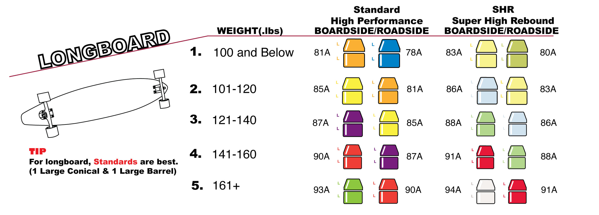

A standard bushing combo (barrel/cone) is the most common choice for this type of riding. Cruising and carving are on the casual end of the longboarding discipline spectrum, so our setup suggestions will assume you’re keepin’ it casual on mild hills or flat surfaces.
